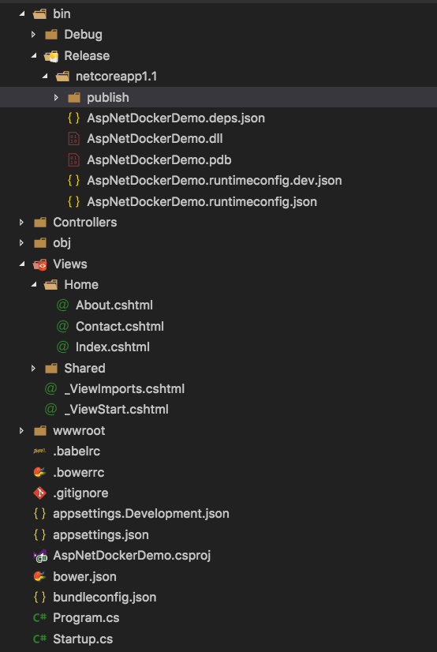
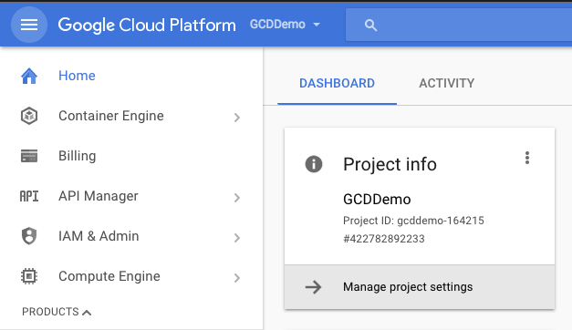
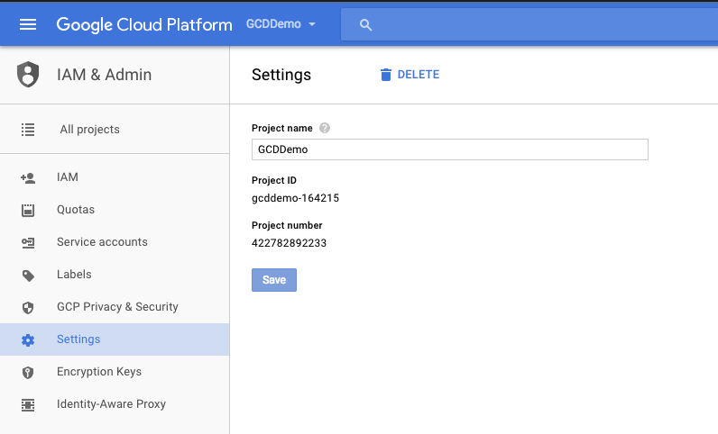
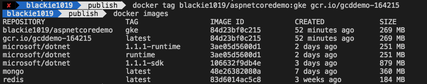
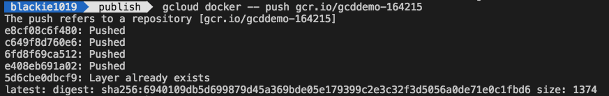
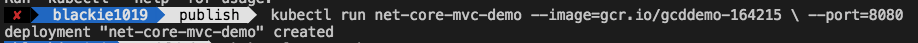
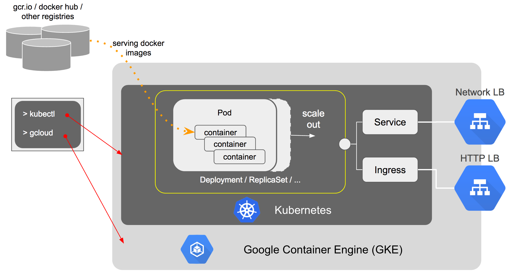

使用Google Container Engine 是Google所推出的Container Host Cluster服務，讓Docker(Cotainer)透過Cluster環境來執行你所寫的ASP.NET Core MVC程式。
Google Cloud免費試用可以讓我們一個月有免費獲得 $300 美元的試用額度，並且這包含平台中的所有服務．甚至到免費試用期結束後不會自動延續服務收費．
而Google Container Engine (GKE) 是Google所推出的Container Host Cluster服務，GKE 一方面允許擴展可以使用的資源，另一方面則可以讓執行時候可以有容錯的可能性(避免單點錯誤的狀況發生)。而為什麼叫GKE而不是叫GCE勒，原因在於K指的是Google 自家的kubernetes系統。Docker本身強調build, ship and run的觀念，透過K8S作完整的管理即可達到擴展性與可修復等特性。
這次分享如何將ASP.NET Core運行在GKE上，對於Google Cloud Platform的基本介紹可以參考先前的Google Cloud Platform Introduction
運行起來的網站連結=>demo網站
Google App Type : GAE, GKE, and GCE

針對不同的彈性與管理/開發上的用途，Google Cloud Platform上可以Hosting的服務有以下三種:
Google Compute Engine(GCE)
等同於用VM的觀念來使用Google Cloud
Google App Engine(GAE)
Google App Engine(GAE) 讓使用者可以在Google的基礎架構之上執行網路應用程式，分為Standard與Flexible兩種不同的Runtime。對於能使用的開發的語言有所限制，但相對GCE來講，可以更簡單且快速的將你的程式做部屬，且也針對network, security,monitoring與performace tuning做了設定與調整。
Google Container Engine(GKE)
讓你可以使用Docker與k8s做更彈性的動態拓展，實現containerlize
Deploying Comparison
Kubernetes Introduction
Kubernetes (K8S) 是 Google 團隊發起並維護的Docker開源Container Host Cluster管理系統，它支援常見的雲平台(Google Cloud, AWS, Azure)，也支援內部架設。而這個專案本身是起源至Borg．有興趣要了解這個K8S的可以參考K8S.io．
Google 於2015年釋出K8S後，引起了話題。原先僅是屬於內部專案 – Borg，之後IT大廠如Redhat, CoreOS, IBM, 甚至 Amazon, Microsoft 這些公有雲端供應商都搶著整合進自己的服務中。

K8S本身透過GO來實作，有以下的特性:
- 簡單：輕量級，簡單，容易理解
- 方便：支援公有雲，私有雲，混合處理雲，以及多種雲平台
- 拓展姓：模組化，可插拔，支援鉤子，可任意組合
- 自修復：自動重調度，自動重啟，自動複製
針對K8S更詳細的介紹請參考yeasy docker practice 2017年正體中文譯本 - Kubernetes)

以下節錄重點介紹
- 節點（Node）：一個節點是一個執行 Kubernetes 中的主電腦。
- 容器組（Pod）：一個 Pod 對應於由若干容器組成的一個容器組，同個組內的容器共享一個儲存卷(volume)。
- 容器組生命週期（pos-states）：包含所有容器狀態集合，包括容器組狀態類型，容器組生命週期，事件，重啟原則，以及replication controllers。
- Replication Controllers（replication-controllers）：主要負責指定數量的pod在同一時間一起執行。
- 服務（services）：一個Kubernetes服務是容器組邏輯的進階抽像，同時也對外提供存取容器組的原則。
- 卷（volumes）：一個卷就是一個目錄，容器對其有存取許可。
- 標籤（labels）：標籤是用來連線一組對象的，比如容器組。標籤可以被用來組織和選擇子物件。
- 介面權限（accessing_the_api）：連接埠，ip位址和代理的防火牆規則。
- web 界面（ux）：使用者可以透過 web 界面作業Kubernetes。
- 指令行指令列作業（cli）：kubecfg指令。
Kubernetes Overviw
K8S屬於分散式架構，主要由三個元件所構成：
- Master – 主節點，負責主要管理與協調各Node
- Node – 主要工作的節點，上面運行了許多容器(Pod)。之前看過，在1.3版的K8S可操控高達2,000個nodes以上，可支援60,000個Pod。這邊最有名的案例就是Niantic推出的Pokémon Go
- Masters和Nodes組成叢集(Clusters)
kubernetes pods:
kubernetes pods 細節:

對於上述說明看不太懂的朋友，誠摯的推薦花8分鐘看下面的影片！
ASP.NET Core MVC Play with GKE
Create ASP.NET Core MVC Project
首先我們先建立專案資料夾
mkdir AspNetDockerDemo
接著我們就透過dotnet CLI工具幫我們建立mvc專案
dotnet new mvc
專案建立後我們就透過nuget幫我們還原專案有關的類別庫並執行它
dotnet restore
dotnet run
這邊我們執行該專案如果可以看到以下畫面就代表網站建立成功了
Publish Release Version Application
實務上在正式環境運行時我們會將ASP.NET Core編譯成release的版本才做發佈，所以這邊我們先編譯release並發佈該版本
dotnet publish -c Release
當成功建立後我們先確認一下現在建立的專案目錄：

這邊可以看到我們的程式已經編譯且放在bin>Release>netcoreapp1.1>publish中
我們可以透過以下方式將網站再次運行確認打包出來的東西是否正確
cd bin\Release\netcoreapp1.1\publish
dotnet AspNetDocker.dll
Containerize Application into Docker Container
當我們程式都確定撰寫完畢且編譯成Release發佈後，我們就可以到該發佈的資料夾內建立Dockerfile(注意檔名為大寫且沒有副檔名)
touch Dockerfile
Dockerfile內容如下:
FROM microsoft/dotnet:1.1.1-runtime
COPY . /app
WORKDIR /app
EXPOSE 8080/tcp
ENV ASPNETCORE_URLS http://*:8080
ENTRYPOINT ["dotnet","AspNetDockerDemo.dll"]
這邊我們特別指定使用ASP.NET Core 1.1.1-runtime的版本而非SDK版，兩者的差異可以看Docker Hub上的說明．
接著我們在資料夾路徑內建立該docker image：
docker build -t blackie1019/aspnetcoredemo:gke .
建立完成後我們將該映像檔實際運行起來看看是否正常:
docker run -d -p 8080:8080 -t blackie1019/aspnetcoredemo:gke
執行成功後確認一下是否正常運行(-a是為了列出正在執行跟沒有執行的所有container)：
docker image -a

如果都沒問題我們就可以到localhost:8080實際看到我們的網站．接下來我們將開始設定google cloud platform
Register and Create Google Cloud Project
首先到Google Cloud Platform進行帳號註冊
Google Cloud Platform不同於AWS與Azure在網頁介面上是把每個服務分類後在單一服務裡面呈現所有與該服務有關的專案，它採用專案導向的方式建立服務，所以我們需要建立一個專案(project)才可以針對該專案建立相關服務．
至Dashboard我們先建立一個新的專案，建立完後我們可以看到該專案的project-id


Download and Setup Google Cloud SDK
Google Cloud SDK是一個官方推出的Command-line工具
小編這邊用的電腦是macOS的系統，須先將python更新至2.7版以上，然後依序執行下面指令
curl https://sdk.cloud.google.com | bash
重啟shell或是透過下面指令直接重啟
exec -l $SHELL
接著我們初始化sdk，這個步驟會將登入資料跟設定記憶在該電腦環境中
gcloud init
Publish ASP.NET Core MVC App to Cloud
Create a Kubernetes Cluster
在安裝Google Cloud SDK後我們需要安裝kubectl這個元件(components)：
docker components install kubectl
之後可以透過該工具來幫我們建立Kubernetes Cluster:
gcloud container clusters create gcd-demo-cluster --zone asia-east1-a
–zone參數是讓我們指定要建立的region位置，實際上能用的region我們可以透過下面指令查詢：
gcloud compute zones list
如果不想透過指令建立也可以透過GUI介面建置：

Config kubectl command line Access to the Kubernetes Cluster
在使用前我們需要先透過get-credentials設定要使用的Kubernetes Cluster
gcloud container clusters get-credentials gcd-demo-cluster --zone "asia-east1-a" -project gcddemo-164215
這邊如果我們沒有按照上一步建立Kubernetes Cluster或是打錯名稱就會出現下面找不到的錯誤：
Push Image to Goole Container Registry
接著我們將先前建立好的docker 映像檔上傳至Goole Container Registry，但在運行前我們先將剛剛的映像檔加入新的tag方便gcloud指令可以找到它：
docker tag blackie1019/aspnetcoredemo:gke gcr.io/gcddemo-164215

然後我們用docker – push的方式上傳至Goole Container Registry
gcloud docker -- push gcr.io/gcddemo-164215

Deploy App to Google Container Engine
當我們將上面docer映像檔上傳完成後，就可以透過下面指令將它實際運行起來：
kubectl run net-core-mvc-demo --image=grc.io/gcddemo-164215 \ --port=8080 deployment "net-core-mvc-demo" created

我們可以用get deployments與get pods查看剛剛建立的情況
這邊pods的建立需要時間所以當我們確認他狀態為running後才表示真的可以用
當pods正常運行後我們還須多做一個設定將我們的8080 port開發對外
kubectl expose deployment net-core-mvc-demo --port=8080 --type="LoadBalancer" service "net-core-mvc-demo" exposed
該指令執行後由於建立service需要一點時間所以我們可以透過下面指令查看目前狀態(從pending=>給ip)：

當我們看到它被指派了external-ip後我們就可以到這個ip與搭配的port好去看該網站了，http://35.185.170.247:8080/
整個弄完後Recap一下整個架構會如下圖：

[補充] Google App Engine Environment
Google App Engine 有兩個環境(Environment)類型:
App Engine Standard Environment
- Managed runtimes for specific versions of Java, Python, PHP & Go
- Autoscale workloads to meet demand
- Free daily quota, usage based pricing
- SDKs for development, testing and deployment
Need to conform to sandbox constraints:
- No writing to local file system
- Request timeouts at 60 seconds
- Limit on 3rd-party software installations
以下是官方以Web應用程式給的運作流程範例：
App Engine Flexible Environment (Beta)
- Build, deploy containerized apps with a click
- Standard runtimes - Python, Java, Go, Node.js - with no sandbox constraints
- Custom runtime support for any language that supports HTTP requests
- During beta pricing based on Compute Engine usage
- Local development relies on Docker
- Standard runtimes can access App Engine services: Datastore, Memcache, task queues, logging, users, and so on
Flexible Environment 因為可使用Custom runtime，我們就可以自行定義Container的dockerfile，而這樣的檔案也可以沿用到GKE的架構．
Standard and Flexible Environment Comparison
References
- Google Cloud Computing compares GCE, GAE and GKE
- GKE 系列文章(一) – 為什麼使用 Kubernetes
- Pokémon GO全球大賣的隱形關鍵
- Deploy an ASP.NET Core App to App Engine
- GCPUG.TW-GCP Demos
- Docker學習筆記
- Kubernetes學習筆記
- Managing containerized ASP.NET Core apps with Kubernetes
- Google Cloud Platform - Pushing to Container Registry
- Kubernetes从Private Registry中拉取容器镜像的方法
- Using a Service to Access an Application in a Cluster
- GCPUG.TW : GKE基本操作